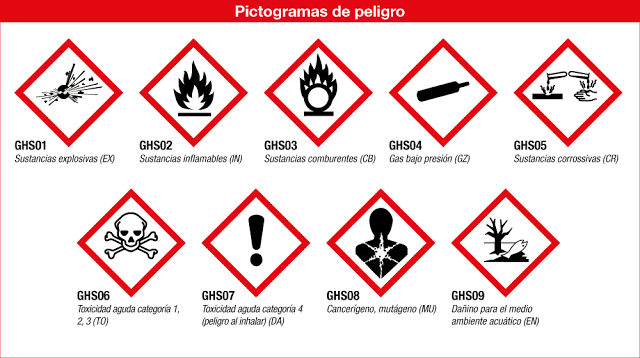

Introducción
Las sustancias químicas están presentes en una gran variedad de
productos que utilizamos a diario, tanto en el hogar como en el
trabajo. Estos productos incluyen detergentes, desinfectantes,
cosméticos, pesticidas, pinturas, entre otros. Aunque estos productos
nos proporcionan muchos beneficios, sus componentes químicos pueden
tener efectos adversos sobre nuestra salud y el medio ambiente.
2. Efectos en la salud
El contacto prolongado con sustancias químicas puede causar una amplia gama de problemas de salud, algunos de los más comunes son:
Efectos agudos:
- Irritaciones respiratorias y dermatológicas: Muchas sustancias químicas volátiles como el cloro, el amoníaco y los COVs pueden causar irritación en la piel, los ojos y el sistema respiratorio al ser inhalados o tocados.
- Alergias: Los productos de limpieza y cosméticos contienen fragancias y conservantes que pueden desencadenar reacciones alérgicas en personas sensibles.
Efectos crónicos:
- Trastornos hormonales: Sustancias como los parabenos y ftalatos (presentes en cosméticos) son disruptores endocrinos, lo que significa que pueden interferir en el equilibrio hormonal, afectando la fertilidad y aumentando el riesgo de enfermedades crónicas como el cáncer de mama o problemas reproductivos.
- Problemas respiratorios: Los compuestos volátiles (como los solventes) pueden dañar los pulmones con exposición a largo plazo, contribuyendo a enfermedades como asma y bronquitis crónica.
- Cáncer: Algunos pesticidas y productos de limpieza contienen compuestos carcinógenos que pueden aumentar el riesgo de desarrollar diferentes tipos de cáncer con el tiempo.

3. Impacto en el medio ambiente
El uso y eliminación de productos químicos de uso cotidiano también tienen un impacto negativo en el medio ambiente:
Contaminación del agua:
- Eutrofización: Los fosfatos presentes en detergentes y productos de limpieza llegan a ríos y lagos, causando el crecimiento excesivo de algas, lo que afecta la vida acuática y la calidad del agua.
- Toxicidad acuática: Sustancias como los pesticidas y herbicidas llegan a fuentes de agua potable, afectando a organismos acuáticos y perturbando los ecosistemas marinos y de agua dulce.
Contaminación del aire:
- COVs: Los compuestos orgánicos volátiles presentes en pinturas, solventes y aerosoles se evaporan fácilmente al aire, contribuyendo a la contaminación del aire interior y exterior, afectando la calidad del aire y contribuyendo a problemas respiratorios y al calentamiento global.
- Emisión de gases de efecto invernadero: Algunos aerosoles y refrigerantes (CFCs y HFCs) son potentes gases de efecto invernadero que contribuyen al calentamiento global y al agotamiento de la capa de ozono.
Contaminación del suelo:
- Acumulación de químicos: Pesticidas y productos químicos industriales pueden persistir en el suelo durante décadas, afectando la fertilidad del suelo y la biodiversidad del ecosistema.
4. Prevención y alternativas más seguras
Para mitigar los efectos negativos de estas sustancias, tanto en la salud humana como en el medio ambiente, existen alternativas más seguras y estrategias preventivas:
- Uso de productos ecológicos: Optar por productos de limpieza, cosméticos y pesticidas ecológicos y biodegradables reduce la exposición a sustancias químicas dañinas.
- Manejo adecuado de desechos químicos: Separar adecuadamente los productos químicos peligrosos y seguir las normativas locales de eliminación.
- Uso de productos naturales: Vinagre, bicarbonato de sodio, y aceites esenciales pueden sustituir a limpiadores industriales para muchas tareas domésticas.
- Aireación adecuada: Ventilar adecuadamente los espacios reduce la concentración de COVs en el aire interior, mejorando la calidad del aire.